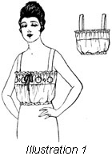
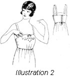

1926—The New-Way Course in Fashionable Clothes-Making
Lesson 30—Camisoles
Camisoles (Illustration 30-1)
There is no such thing as too many camisoles. In the summer-time you need dainty, pretty camisoles to wear beneath the fine, sheer frocks of summer-time wear. In winter, you need camisoles to wear beneath your blouses, to give a good foundation to your silk frocks. The more camisoles you have, the more you want—and rightly so, for the camisole is one of the most distinctly feminine and dainty garments in the woman's wardrobe.
The camisole shown in the illustration is just one of the many pretty ones you can make with the aid of your valuable machine attachments. You may use almost any material you wish, although silk, wash satin, crepe-de-chine and combinations of lace and ribbon are the most popular camisole choices. Handkerchief linen is being used quite extensively also.
Despite the fact that it is one of the daintiest and prettiest underthings, the camisole is quite a simple garment to make. It is really only a straight strip of material, with a casing for an elastic belt at the bottom, and straps over the shoulder. A ribbon is usually run through the casing or beading at the top to adjust the fullness across the bust.
Making the Camisole
Before making a camisole, it is necessary first to know your own measurements. Measure the bust and allow ten inches for fulness. Thus, if your bust measure is 36 inches, use a strip of material 46 inches long for your camisole. The width of the material must be the width of the underarm measure plus an allowance for a blouse of about two inches.
- Prepare material for cutting by pressing it free from wrinkles.
- Decide just how you want your camisole trimmed.
- A pretty camisole can be made by stitching together lace insertion with the edge-stitcher on the sewing machine and attaching it to the top of the material to give the required width, finishing it with a casing through which is drawn a silk ribbon.
- The bottom of this camisole may be finished merely with a casing through which is drawn elastic.
- You may have your camisole closed in the front to slip over the head, in which case it is necessary to French seam the ends together. This seam should come directly under the arm.
- If open in front, face or hem the ends and use buttonholes and small buttons to effect a closing.
- Shoulder straps may be of the lace edge and insertion or of the lace edge and material stitched together.
Another effective trimming for the camisole may be achieved by stitching lace insertion and embroidery insertion together, making a border for the top of the garment. To this add a beading for the ribbon and finish with a narrow lace edging. This may be a slip-over camisole or an open-front camisole as you prefer, with shoulder straps made either of lace or embroidery insertion trimmed on either side with lace edging. If you make this an open-front camisole, use buttonholes and tiny pearl buttons for closing instead of snap fasteners.
If your camisole is of crepe-de-chine, silk or wash satin you will find that touches of fine hand embroidery impart the prettiest trimming touches. The garment may be trimmed at the top with lace and beading, or it may be finished simply with a faced casing for the ribbon. If the camisole is a slip-over style, the top may be finished with elastic over which the fulness is evenly adjusted.
The binder attachment on the sewing machine will be found a wonderful time and work-saver for binding the edges of shoulder straps in the plainer camisoles. And, in addition, it will impart a smart, tailored finish which no amount of hand stitching could achieve. If you want a sturdy, long-wearing camisole, make it entirely plain, in the slip-over style, with nothing but a bound edge at the top and around the shoulder straps.
You will find, also, that your edge-stitcher, tucker and ruffler are extremely valuable in the making of pretty camisoles. With the tucker you can make pretty tucked medallions, insertions of tucked material, and tucked shoulder straps. With the ruffler you can save the trouble of shirring the top of the garment by hand, you can make shirred shoulder straps. Experiment with your attachments, study the ready-to-wear garments, and you will be making exquisite underthings—beautiful bloomers and chemises and camisoles—that your friends and neighbors will genuinely admire.
Brassiere (Illustration 30-2)
There are many people who do not wear brassieres. The meaning of the word brassiere itself is "bust confiner"—a meaning which amply illustrates the use of the garment. In order to be a correct bust confiner, the brassiere must be perfect fitting, it must be made of correct material and it must conform to prevailing dress modes. A brassiere of the early part of the twentieth century—there are still some in existence—worn with a smart little straight-line dress of today would not only make the wearer extremely uncomfortable but would actually distort the lines of the figure.
But do not think, for this reason, that the brassiere is a difficult garment to make. As a matter of fact, it is quite simple—no more difficult than the making of the camisole. Use material that is not too heavy nor too light, but firm and substantial—and then follow these directions.
- Brassiere patterns are in three pieces—one piece for the front and two for the back, or two for the front and one for the back. Secure your pattern, being sure it corresponds with your measurements, and prepare both material and pattern for cutting. The directions following are for a brassiere open at the back.
- The pattern should be placed on the material, the center of the front of the pattern on the lengthwise fold of the cloth. The center of the back of the pattern should be at the selvedge.
- Mark all construction points and be sure that all seam allowances are correct. Cut according to pattern.
- Now, following the construction marks, baste the parts together and fit the brassiere.
- If alterations are necessary, make them at the underarm seam. It is a mistake to make the brassiere too tight; it should fit just snugly enough to hold in the line of the figure, but not to cramp and restrict it.
- Stitch the garment together. Now, using the binder attachment, bind the top and bottom edges of the brassiere. The seams should be of the tailored type.
- Work eyelets in the back and use a rubber lacing. This rubber lacing is excellent and should by no means be omitted. It adds to the comfort of the wearer and makes the brassiere better fitting in every respect. Shoulder straps are made of the material. Or, if there isn't sufficient material for this purpose, a substantial tape may be used.
- As a rule, brassieres are absolutely devoid of all trimming. However, if you wish, you may add a touch of hand embroidery as a finishing-touch or you may use a narrow lace edging all around the top.
- Some brassiere patterns open in the front and others in the back. Select the back-opening style of brassiere only if you are rather slender and wish to hold the bust up. The front opening brassiere is for the rather stout person who wishes to drop the bust.
When you are able to make a perfect-fitting, attractive brassiere and a dainty camisole you will know that you are progressing rapidly in the mastering of modern clothes-making. The making of the brassiere entails important fitting problems; the making of the camisole entails the interesting problems of trimming and finishing. When you are able to make these garments correctly—a brassiere that moulds your figure into lines of graceful smartness, a camisole that peeps through from beneath your sheerest blouse and reveals exquisite daintiness and trimming that is in good taste—then you will know that in a short time you will be the expert clothes-making you are planning to be, that you will have in your hands the opportunity of making right at home all the beautiful, attractive things-to-wear your heart desires!
 Lessons 28—29—30
Lessons 28—29—30
Questions
- What are the purposes of petticoats?
- How much fullness should one allow for a petticoat ruffle?
- How should petticoat plackets be finished?
- To make a plaited flounce, how much fullness is allowed?
- Name at least five materials suitable for underwear.
- How much fullness is allowed just beneath the sleeve in a kimona nightgown?
- How is a kimona nightgown or bungalow apron pattern made larger?
- Where should length alterations on the gown pattern be made?
- Make a sketch showing a design for quite a nice gown.
- Why is a yoke advisable in a flannelette gown?
- What kind of seams should be used on flannelette if the seams are long?
- What kind of seam is used on bloomers?
- What measurements are necessary in making a camisole?
- Where should a brassiere for a stout person close?